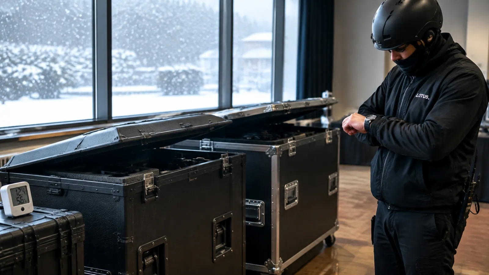

冷えた機材
冬の屋外や車内で、機材そのものが冷えています。
LOTUS VISUAL JOURNAL / BEHIND THE SCENES
冷えた車から、暖房の効いた会場へ。
機材の表面に水滴がつく、必要な待ち時間の話です。

冬の屋外や車内で、機材そのものが冷えています。
暖かく湿った空気が、冷たい表面に触れます。
条件によっては、内部の基板や端子にもつきます。
温度の数字は例で、結露するかどうかは湿度などの条件にもよります。
01 / WHY IT HAPPENS
暖かく湿った空気が冷たい表面に触れると、空気中の水分が水滴になります。夏の冷たいグラスの外側と同じ現象が、冬は逆向きに、冷えた機材の表面と内部で起きます。表面が乾いて見えても、内部に結露が残る場合があります。
この状態で通電すると、水滴がショートの原因になります。多くの機材の仕様に「結露なし」とあるのは、このためです。
02 / THE NUMBERS
たとえば XVVSDI2HDMI と光伝送用 XVVSDI2FIBERT1 / XVVFIBER2SDIT1 は 0〜40℃・相対湿度 0〜90%、DVI 分配器 DVH-17A は 0〜40℃・20〜90%RH、SDI 分配器 DDA-25HD/SD は 0〜40℃・20〜80%RH。これらはすべて結露なしの条件です。同じ種類の機材でも条件は異なるため、使用する型式の説明書で確認します。
上限の 40℃ は「部屋の気温」ではなく「機材のまわりの温度」です。直射日光の当たる屋外や、ラックの中で熱がこもる場所では、気温が 30℃ でも機材のまわりは上限を超えることがあります。
屋外の条件(IP65 の読み方)を読む ↗03 / HOW TO WAIT
機種ごとの説明書に従って温度をなじませます。内部を含む結露の解消を確認できるまで通電しません。表面が乾いたことだけでは判断せず、不明な場合は担当者へ相談します。
必要なのは、搬入の予定に「なじませる時間」を入れておくことです。冬の早朝搬入や、屋外からの移動がある日は、電源を入れる時刻を後ろにずらして組みます。機種ごとに温度をなじませる方法と通電条件を確認して、搬入から本番までの余裕を確保します。
Q. どのくらい待てばいいですか?
機材と環境で変わるため、一律の時間や手で触れた感覚では決めません。機種の説明書に従い、内部を含む結露の解消を確認できなければ通電せず担当者へ相談します。
Q. 夏は関係ありませんか?
冷房の効いた車や倉庫から、蒸し暑い屋外や搬入口へ出すときに、同じことが起きます。
Q. LED パネルも同じですか?
LED パネルも、型式ごとの使用環境と結露に関する条件を確認します。必要な待ち時間を枚数だけで決めません。
ON A COLD MORNING
本文の数値と定義は、規格とメーカーの公表値によります。